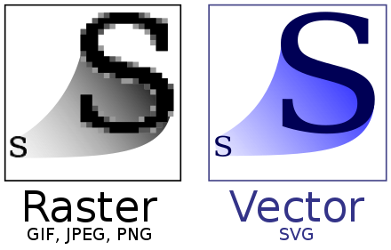

SVG
🔎SVG의 정의
SVG(Scalable Vector Graphics)는 상호작용 및 애니메이션을 지원하는 벡터 이미지 형식입니다.
벡터 기반이라는 단어가 생소한데, 좌표와 좌표를 연결하여 표현한 그래픽이라고 이해하시면 됩니다.각 좌표값을 기반으로 선과 도형을 연결하여 이미지를
구현한 것을 SVG라고 합니다.
이러한 특징 덕분에 크기를 조절해도 비트맵 이미지처럼 깨지지 않는 장점이 있습니다.
🔎이미지 형식
비트맵 이미지 형식
우리가 흔히 알고 있는 jpg, png 이미지 형식은 비트맵 이미지라고 합니다.
비트맵 이미지란 서로 다른 점들이 모여서 그림으로 그려지는 이미지 표현 방식을 말합니다.
비트맵 이미지는 확대를 하면 이미지의 손상이 발생하기 때문에, 웹 페이지의 미관을 해칠 수 있습니다. 그렇다고 이미지의 출력을 크게 하면 용량이 커지게 됩니다.
미국의 대기업 아마존은 홈페이지의 로딩시간이 0.1초 지연될 때마다 판매율이 1퍼센트 감소한다는 결과를 발견하였습니다.
벡터 이미지 형식
벡터 이미지는 비트맵 이미지 형식보다 용량이 작고, 그래픽으로 구현하기때문에 이미지 파일을 http 요청을 로드할 필요가 없기 때문에 로딩속도가 더 빠릅니다.
또한 벡터 이미지는 점과 점 사이의 계산을 통해 그리는 특성상 이미지를 확대해도 손상이 없습니다.
하지만 복잡한 이미지를 표현하려면 오히려 비트맵 형식보다 로딩속도가 느려질 수 있습니다.
이모티콘이나 로고처럼 간단한 파일을 표현할 때는 SVG, 사진과 같은 정교한 이미지는 PNG나 JPG가 적합합니다.
🔎SVG를 이용하여 도형그리기
정교한 그래픽은 별도의 디자인 프로그램을 이용하여야 하지만 기본적인 도형은 HTML이나 CSS를 사용해 그릴 수 있습니다.
여기서는 원을 한 번 그려보겠습니다.
🔎SVG 사용법
SVG를 웹 페이지에서 구현하는 방법은 크게 4가지가 있습니다.
- img 태그
- background-image
- inline
- object 태그
img 태그
일반적인 이미지처럼 html의 body에 img 태그를 삽입할 수 있습니다.
background-image
일반적인 이미지처럼 css의 background-image 속성을 이용하는 방법입니다.
inline
HTML의 body태그 안에 직접 코드를 넣어주는 방식입니다.
인라인 방식은 HTTP 요청을 받지 않기 때문에 다른 방식보다 로딩속도가 빠른 장점이 있습니다.
하지만 HTML이 더러워 지는 단점이 있습니다. 위에서 봤던 원 도형 예제가 인라인 방식입니다.
object 태그
외부에서 SVG파일을 불러오는 방법입니다.
HTML의 내부에 직접 코드를 넣지 않고 SVG를 조작하는 경우에 가장 좋은 방법입니다.
TIP
- 이미지에 별다른 조작을 가하지 않을것이다 → img 태그orbackground-image
- SVG가 필요하고 이미지에 조작을 가할 것이다 → >inlineorobject태그
🔎비트맵 이미지 SVG로 변환하기
디자인 프로그램을 이용해서 비트맵이미지를 변환할 수 있습니다.
s왼쪽은 PNG 원본, 오른쪽은 변환한 SVG 이미지입니다.
변환한 SVG 이미지에 인터랙티브 SVG 애니메이션을 구현해 보겠습니다.